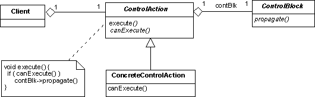

Control Block Design Pattern
Intent
Decouple the implementation of data-processing algorithms from their management.
Based On
This pattern is based on the sequential data processing design pattern of the AOCS Framework (see also: A. Pasetti, Embedded Control Systems and Software Frameworks, Springer-Verlag, 2002).
Motivation
On-board systems typically implement data processing algorithms. The algorithms are usually embedded within the application. Their parameters are normally read from an on-board database. This latter feature provides some flexibility in tuning the algorithm. However, the structure of the algorithm itself is normally hard-coded and very difficult to change.
In a better solution, the algorithm is entirely encapsulated in a dedicated component that is made to implement a standard interface. This interface decouples the management of the algorithm from its implementation and makes the replacement of the algorithm easy. The control block design pattern proposes such an encapsulation mechanism. This design pattern is obtained from a simplification of the sequential data processing design pattern in the AOCS Framework. The AOCS Framework proposes a more ambitious mechanism that allows control algorithms to be combined in various ways. The control block design patterns instead models individual algorithms.Dictionary Entries
The following abstractions or domain-wide concepts are defined to support the implementation of this design pattern:
Structure
The control block design patterns conceptualizes a data processing algorithm as a transfer function of the following kind:
x (t+dt) = f ( x(t) , u(t) ) y (t) = g ( x(t) , u(t) )where the usual notation is adopted with u representing the input vector, y the output vector and x the state vector. The fundamental operation to be performed on a control channel is the propagation of its output signal from time t to time (t+dt). A propagate(t) operation is defined on control blocks that causes their outputs to be propagated up to time t. The time t to which the output values are propagated is called the validity time of the outputs. The control block then maintains a set of inputs, a set of outputs and, optionally, a set of internal states and it implements a propagation algorithm that processes the inputs to update the internal state and to generate the outputs. The control block abstraction is implemented by the
ControlBlock abstract interface that defines the generic operations that can be performed on a control block. The key operation is propagate which directs the control block object to propagate its inputs from the current time to some target time. The control block should be linked to its input and output data and therefore the ControlBlock interface defines two link operations for the inputs and outputs. Finally, control blocks normally have an internal state and therefore a reset service should be defined to allow this state to be reset to some default value.
Participants
Client:The component responsible for managing the data processing. ControlBlock:The abstract interface that characterizes all components that encapsulate data processing algorithms. ConcreteControlBlock:The concrete object that encapsulate a specific data processing algorithm.
Collaborations
The typical operational scenario for this design pattern is:
- At configuration time, a control block component is linked to its inputs and outputs.
- During normal operation, whenever new input data have arrived, the client of the control block periodically sends a propagate request to it to initiate the propagation of the input data to the output data. The client is insulated from the implementation of the data processing algorithm.
Consequences
- Components that are responsible for managing the processing of data can be written in a manner that is independent of the particular algorithms that are used in an application. They see the data processing components exclusively through a generic abstract interface.
- The encapsulation of the data processing algorithm may introduce some overheads especially in the acquisition of the external inputs and in the writing of the external outputs.
Applicability
This design pattern is useful when:
- It is desired to decouple the managers of data processors from the data processing algorithm.
- The data processing algorithm is naturally seen (and implemented) as a single algorithm. If the data processing consists of several independent stages that are naturally encapsulated in dedicated components, then the sequential data processing design pattern from the AOCS Framework is more suitable.
Implementation Issues
Control blocks should be linked to their inputs and outputs. This is necessary to relieve their clients from the need to pass input values to them at each activation and to collect output values. The linking mechanism could be done using the connection design pattern. In this case, the control block component would be configured with a set of data item instances that represent the locations where it is to collect its inputs and where it is to deposit its outputs.
ControlBlock will often be implemented as an abstract base class. The mechanisms for linking the inputs and outputs are independent of the propagation algorithm and could therefore be implemented in this base class.
The control block, when it is activated, propagates its inputs from the current time to some target time. How is the target time determined? In one solution, it is passed as a parameter to the propagate method. In another solution, the control block assumes that time is always incremented by some fixed interval.
In very simple cases, an embedded application will include a few control blocks that must be
propagated on a periodic basis throughout the application life. In such cases, the management of
the control blocks is straightforward. The application holds a list of control blocks and it
periodically goes through the list and sends them a propagate request. In more realistic
cases, however, the application will include several control blocks encapsulating different algorithms
which must be propagated at different times and under different operational conditions. There are
essentially two ways to manage this situation. The first one is based on the
punctual action design pattern. The second one is based on the
manager design pattern.

The second solution requires introducing the notion of controller manager. A controller manager is a functionality manager that manages a list of control blocks (i.e. it uses the control blocks as functionality implementers). With this solution, dependencies on operational conditions are managed by introducing a mode manager to supply mode-dependent lists of control blocks to the controller manager. Now the application only sees the controller manager and periodically activates it. All further details - the number and type of control blocks and the conditions under which they are to be activated - are hidden from it.OBS Framework Mapping
The implementation of this design pattern in the OBS Framework is supported by the following classes:
- ControllerManagercomponent -->
CC_PunctualActionManager,DC_ControlAction - ControlBlockabstract interface -->
ControlBlock
Sample Code
As a first example, consider the case where the data items are used to represent the inputs and outputs of a control block. A sample implementation for a control block base abstract class could be as follows:
class ControlBlock {
protected:
DataItem input[];
DataItem output[];
float state[]; // buffer to hold the internal state
public:
// parameters are the number of inputs, outputs and states
ControlBlock(int n, int m, int p) {
. . . // initialize the internal data structures
}
// Link inp to the i-th input of the control block
void linkInput(int i, DataItem inp) {
input[i]=inp;
}
// Link out to the i-th output of the control block
void linkInput(int i, DataItem inp) {
output[i]=out;
}
virtual void propagate(time targetTime)=0;
}
Concrete control blocks must simply provide an implementation for method propagate. Their implementation
of this method can use the data structures defined in the super class as sources of input values and destinations for
the output values. As an example consider a trivial concrete control block with one input and one output and that
computes an output that is twice its input:
class TrivialControlBlock : ControlBlock {
virtual void propagate(time targetTime) {
output[0].setValue(2*input[0].getValue());
}
}
Remarks
None
Author
A. Pasetti (P&P Software)
Last Modified
2002-06-22